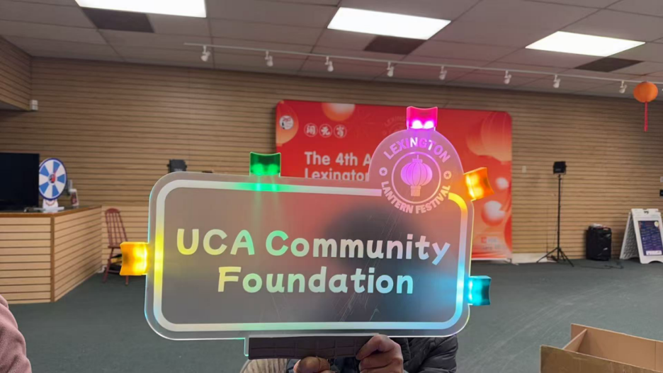
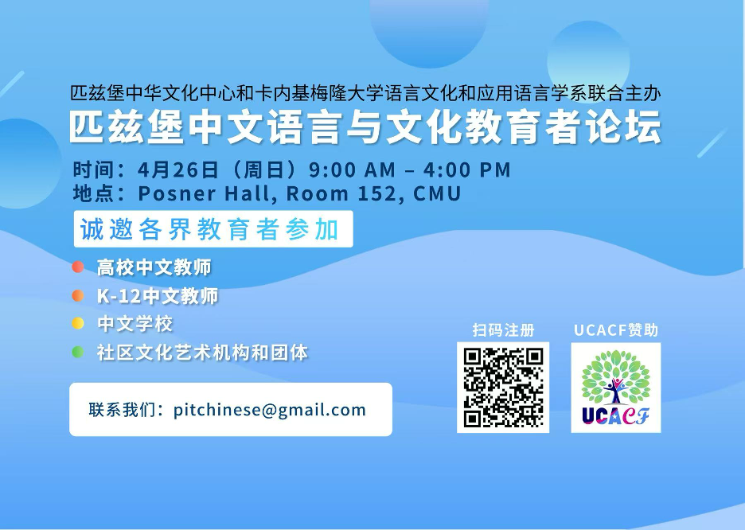

重要活动 | Featured Highlight
3/5 Webinar：基金申请宣讲会 | March 5 Webinar: Grant Application Info Session 三月，UCACF 举办了 2026
年基金申请宣讲会，系统介绍了申请流程、评审机制以及年度重点支持方向。宣讲会围绕申请资格、材料准备、评审标准和资金发放流程等核心问题展开，帮助更多组织更清晰地理解整个申请体系。
更重要的是，我们希望通过这样的方式，让更多有潜力的社区项目有机会被看见和支持。
In March, UCACF hosted its 2026 Grant Information Session, providing a comprehensive overview of the
application process, evaluation criteria, and funding priorities.
The session covered key topics including eligibility, application preparation, review standards, and
funding timelines—helping organizations better navigate the process.
More importantly, the session aimed to make funding more accessible and encourage more community groups
to step forward with confidence.
❄️ 社区亮点 | Community Spotlight
4th Lexington Lantern Festival Celebration | 第四届莱镇元宵庆典
UCACF
很高兴支持第四届莱镇元宵庆典。3月1日，来自二十多家社区机构的合作伙伴齐聚莱镇，共同呈现了一场融合花灯、市集、表演、游行与灯光秀的元宵盛会。活动不仅展现了中华文化的魅力，也促进了不同社区之间的交流与连接。
UCACF was proud to support the 4th Lexington Lantern Festival Celebration. On March 1, more than twenty
community partners came together in Lexington to present a vibrant Lantern Festival featuring cultural
activities, performances, a parade, and a light show. The event celebrated Chinese cultural heritage
while also strengthening connection and collaboration across the broader community.

✅ 3月批准项目 | March Approved Grants
· Northwest Chinese School - 2026 Chinese Lunar New Year Festival
· United Chinese Americans – Illinois Chapter (UCA-IL) - Chinese American Workforce Pipeline
Development: A Learning Pilot to Test a Scalable Behavioral Health Workforce Pipeline-Building Model and
Process
· Nevada Chinese American Association - Exhibition: Enduring Legacy: Chinese Americans and the Making of
Nevada, America250 Celebration
· HeCares Foundation - 2026 Internship Scholarship for American-born Chinese Students
· 1World1Mission / Michigan Alliance of Chinese American Organizations - Detroit China Day 2025 – 9th
Chinese American Culture & Arts Festival
· The Chinese Institute of Engineers - USA - Asian American Engineer of the Year (AAEOY) Awards and
Conference
· Chinese Youth Association of Columbia - Young Lions Arts Presentation
· New Legacy Cultural Center - 4th Annual Lexington Lantern Festival
· United Hub - Walk to Harbor
· Cultural Society (CSEBRI) / AAPI History Museum - Herstory: Chinese American Women in U.S. Legal
History
· Chinese American Association of Lexington - From Bystanders to Participants: The History of Chinese
American Civic Engagement in Lexington, Massachusetts
· Chinese American Association of Lexington - Bridging Cultures: The Lexington Symphony Lunar New Year
Premiere Featuring the Morin Khuur
· Texas Asian American Youth Association - Project Smile
· NECAA Dragon Youth Sports Program (NDYSP) - NECAA Dragon Youth Sports Program
· North America Nanning Association - 2026 NANA Lunar New Year Gala
· CSUN - Sponsor 2026 California State University Northridge Lunar New Year Gala: “Strength in Motion:
Moving Forward Together”
· Little Paws Pictures (Fiscally Sponsored by Film Independent, a 501(c)(3) nonprofit organization) - I
AM NOBODY
· Workers Assist INC. - Chinatown Community Educational Empowerment (CCEE)
· International Law Society - International Law Society Immigration Aid
· Chinese American Elected Officials Coalition - Las Vegas Elected Officials Retreat (attending UCA
National Conference)
· Allstars Learning Inc - Inclusive Threads of Chinese Freedom in U.S. 250
· Charleston Chinese Academy - “Flying Dragons”: Traditional Sports for Community Service and Cultural
Outreach
· United Chinese Association of Arizona - 2026 UCAA 19th Phoenix Night Gala – Celebrating America’s
250th Anniversary
接下来重点宣传 | What’s Next: Key Promotions
Inaugural Pittsburgh Chinese Language & Culture Educators Forum | 首届匹兹堡中文语言与文化教育者论坛
UCACF 很高兴支持首届匹兹堡中文语言与文化教育者论坛。论坛将于 2026年4月26日 在卡内基梅隆大学 Posner Hall 举行，由匹兹堡中华文化中心与卡内基梅隆大学语言、文化与应用语言学系联合主办。活动将汇聚大匹兹堡地区来自高校、K–12 学校、中文学校及社区文化艺术机构的教育工作者，共同交流教学经验、分享资源，并探讨中文教育与文化传播的发展。

UCACF is pleased to support the inaugural Pittsburgh Chinese Language & Culture Educators Forum, to be held on April 26, 2026, at Carnegie Mellon University’s Posner Hall. Co-hosted by the Pittsburgh Chinese Cultural Center and Carnegie Mellon University’s Department of Languages, Cultures & Applied Linguistics, the forum will bring together educators from universities, K–12 schools, Chinese schools, and community arts organizations across Greater Pittsburgh to exchange ideas, share resources, and advance Chinese language and cultural education.
America250：让社区行动起来
2026年美国建国250周年，我们鼓励各地社区组织策划活动，共同讲述华人在美国历史与社会发展中的贡献。UCACF也将持续重点支持相关项目。
As the U.S. marks its 250th anniversary, we encourage local communities to organize meaningful programs
that highlight Chinese Americans’ contributions to American history and society. UCACF will continue to
prioritize support for America250-related initiatives.
三月，我们在不同城市与社区中看到了更多项目的落地与连接的发生。从一场场活动到一次次交流，这些具体的行动正在不断累积，形成更持续的社区影响力。UCACF
也将继续支持更多实践中的探索，与大家一起把这些尝试转化为更长远的改变。
In March, we saw more ideas take shape across different cities and communities. From local events to
ongoing collaborations, these efforts are building momentum and contributing to a more sustained impact.
UCACF will continue to support these initiatives and work alongside our partners to turn today’s efforts
into long-term change.